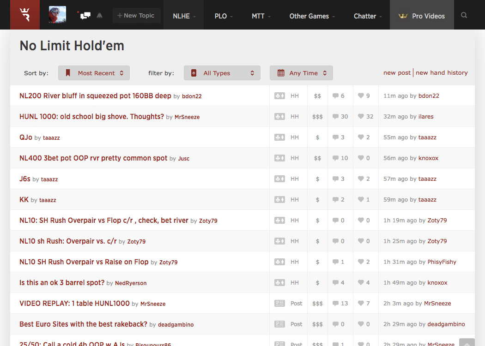
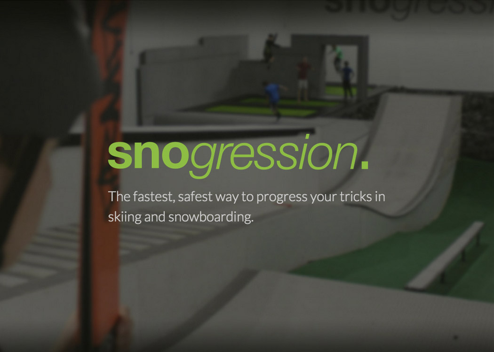
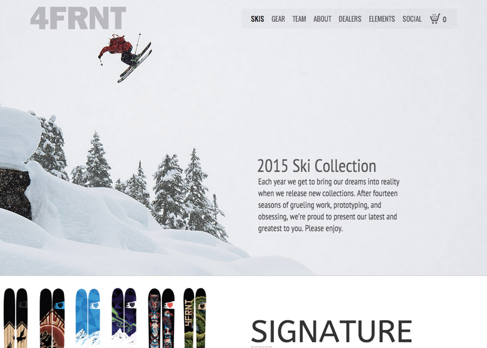
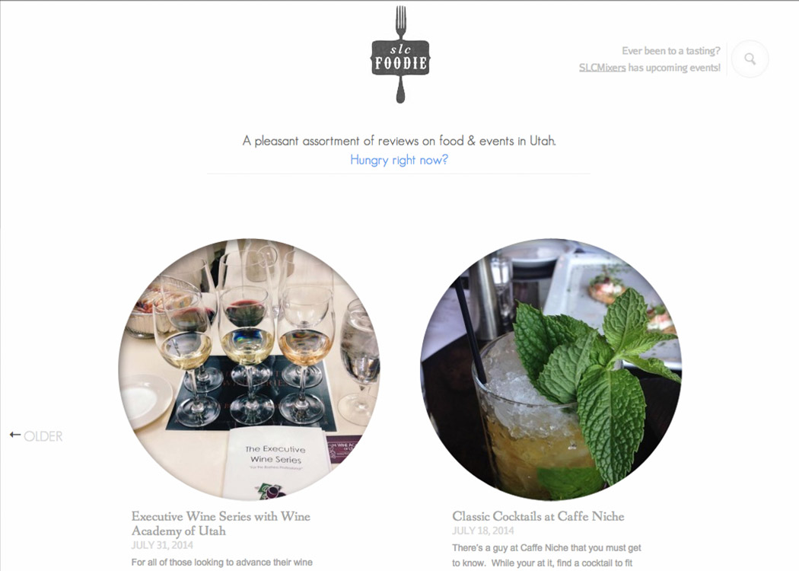
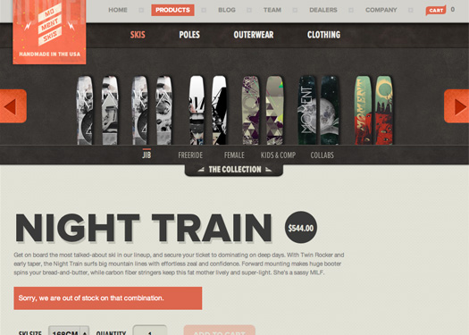
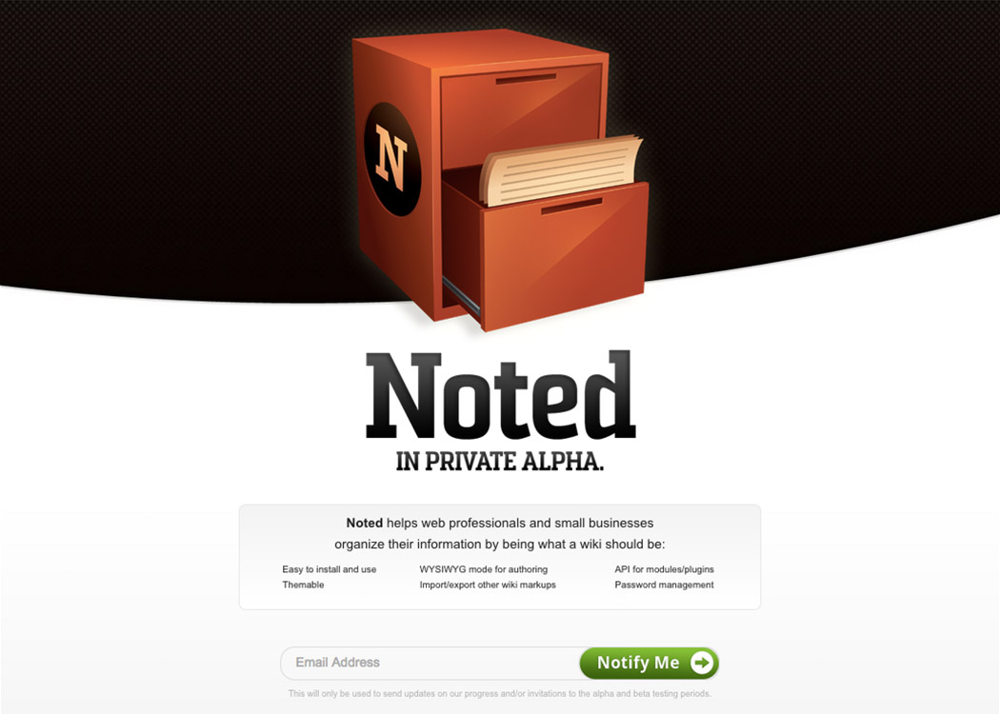
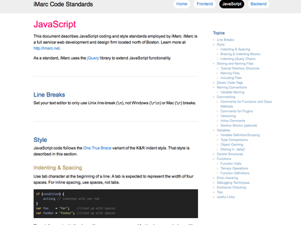
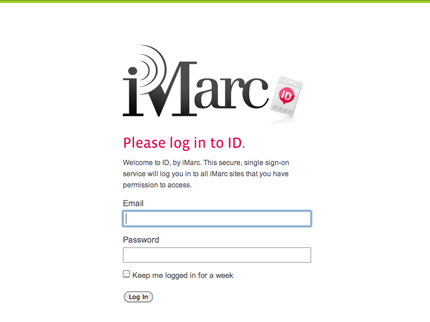

Craig Ruksznis
Hi! Below you’ll find some recent projects I’ve been a part of (ones that I’m allowed to share), things I enjoy doing, and where you can learn more about me. At this time I am happily employed for Run It Once as a lead web developer.
You can contact me at craig@craigruks.com.
Site Work
-

Run It Once
I currently work full time for Run It Once as a full stack developer. I split duties with one other dev to build and maintain the site. Tasks vary from front end animations, to writing database migrations, to working on server stuff. We currently run a Django/Postgres stack on Heroku, and use memcached, redis, and python-rq to speed things up. We also run portions of the front end with AngularJS coupled with a REST API. The site has been around for almost two years now. Most of the first year focused on cranking out new features. This year we have been pushing to reduce load times, add documentation to everything, and have automated backend and frontend testing, all the while adding new features as we go.
-

Snogression
I was approached by Snogression for advice on what their website should be. I helped consult, recommending that they move away from having everything and the kitchen sink on their website. Instead they should focus on their already stellar social media and point everything from social media to a single page website that clearly shows what it is, what types of sessions you can buy, what to bring, and how to get there. We also looked at demographics and realized that it was mostly parents looking at the website, so we opted for easy to read fonts, straight forward sections, and good mobile/tablet versions of the site.
-

4FRNT
In my free time I enjoy designing, however I don’t do it for the money. Rather it’s an outlet for fun, helps balance a full time job as a developer. Thanks to a friend that skis for 4FRNT I was given the opportunity to work with them to build a new site. We worked to pare the old site down to its essentials. Each major section I designed in Photoshop. The site was then built as a custom theme in Shopify. I utilized SASS and Liquid to built out the theme. Shopify is now also connected to their inventory management system so that they can more easily tell customers when something is approaching or is sold out.
-

SLC Foodie
Every now and again I have the opportunity to work on a passion project outside of work. I was fortunate enough in 2012 to redesign and develop the SLC Foodie website, which focuses on food reviews and events in Utah and is led by Becky and Josh Rosenthal. The site design is focused around the photos, and treats the text as if the site was a printed magazine, not a website. For the development side of the project I created a Wordpress template from scratch and pulled over content from their old site. The site is currently being hosted on Heroku and all assets are pulling from Amazon S3.
-

The Academy Awards
Welikesmall was tasked with wireframing, designing and cutting the design up into modular code pieces for the 2012 Oscars. Another coworker and I were tasked with cutting up the designs. Notable pieces I did were the overall site header and footer and the history page (including the Javascript to transition between years and decades, as well as the JSON structure and AJAX calls to pull new data in for a new timeframe).
-

Moment Skis
My job on this site was to put together the backend of this site. We went with Python/Django/MySQL and a shopping cart system called Satchmo. Satchmo also required me to install Fedex/USPS plugins and AuthorizeNet. I also wrote the JS that controls the product image zooming.
-

Noted
A coworker and I were lamenting on how much could be improved with the current wikis on the market in terms of design and usability, so we decided to take a crack at it. Of note in the codebase is a versioning class, where Will refactored diff functionality and I ported over patch functionality from Python. I also designed the entire app as well as the frontend site, which both feature HTML5 with full support of IE6-9, Safari 3+, FF 3+, and Chrome. I also used media queries on the frontend site to create optimized versions for iOS and Android based devices.
-
Desktone
Upon a tight deadline I wrote the front-end and back-end code for this site in two weeks. This included a custom CMS for the blog, events, partners, news, as well as tagging abilities on blogs. I cut up the site into strict XHTML 1.0, and integrated any jQuery necessary (including the homepage slideshow and an HTML5 video player that sat in a modal window). I also integrated a third party vendor with multiple contact forms. And what an amazing client Desktone was to work with! They were easy to find solutions with, extremely responsive, and were quite timely.
-

JavaScript Standards
I wrote the initial draft and led all subsequent iterations on a standards manual for JavaScript at iMarc. This included not only JavaScript but also standards for jQuery as well.
-

ID
Upon realizing that iMarc had many internal sites where usernames and passwords were all stored separately, I tackled building a secure, single sign-on service for all sub-sites of iMarc. This meant writing the initial code base as well as collaborating with coworkers during regular meetings to ensure that the code was solid. All information sent from Identity is encrypted into HMAC strings using public key encryption (OpenSSL), and then SHA-256 is run on those strings. All sessions are restricted to https by running the core service under an SSL to prevent session fixation. Each user has a GUID, and information is pushed (in JSON) whenever asked for by the remote site (typically during log in but can asked at any time).
Skills
Fluent In
- Python/Django,
- PostgreSQL,
- LESS, SASS,
- AWS Services, Heroku
- JavaScript, AngularJS,
- Grunt, Vagrant,
- Shopify, Liquid
- Bash
Intermediate
- PHP,
- Flourish,
- Python,
- MySQL,
- SQLite,
- Photoshop,
- Illustrator,
- HTML Emails
Have Used
- Objective C,
- Flash,
- Wordpress,
- C++,
- .NET,
- VBScript,
- Visual Basic,
- Arduino Boards
To Top